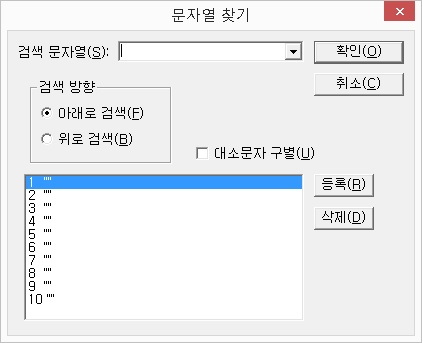

문자열 찾기는 현재 윈도우 범위 내에서 원하는 문자열을 찾아주는
기능입니다.
세부적으로 검색방향과 대, 소문자를 구별하여 검색할 수 있습니다.
문자열 찾기는 가상커서의 찾기 기능과는 다르며 화면상에 실제로 표시되는 글자에 한해서 찾아줍니다.
문자열 찾기 방법
① <Insert-F>키를 눌러 '문자열 찾기' 대화상자를 엽니다.

② '검색 문자열' 편집창에 찾기 원하는 단어를 입력합니다.
③ 방향키를 이용해 검색 방향을 선택합니다.
④ '대, 소문자 구별' 체크상자를 필요에 따라 선택합니다. 기본값은 구별하지 않습니다.
⑤ '확인' 버튼을 눌러 문자열을 찾습니다.
문자열이 찾아진 경우 읽기포인터가 해당 문자열로 이동되며 검색된 라인을 읽어줍니다. 문자열이 발견되지 않으면 비프음과 함께 "문자열을 찾을 수 없습니다"라고 음성 메세지를 출력합니다.